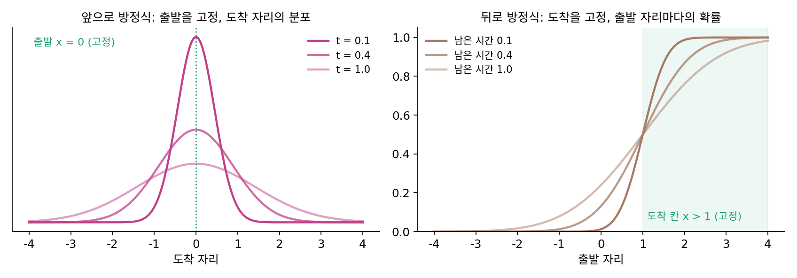
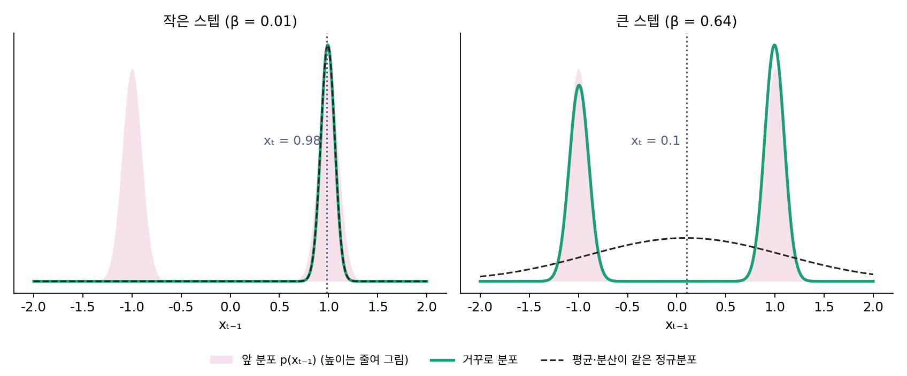
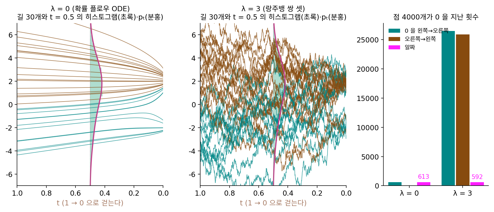
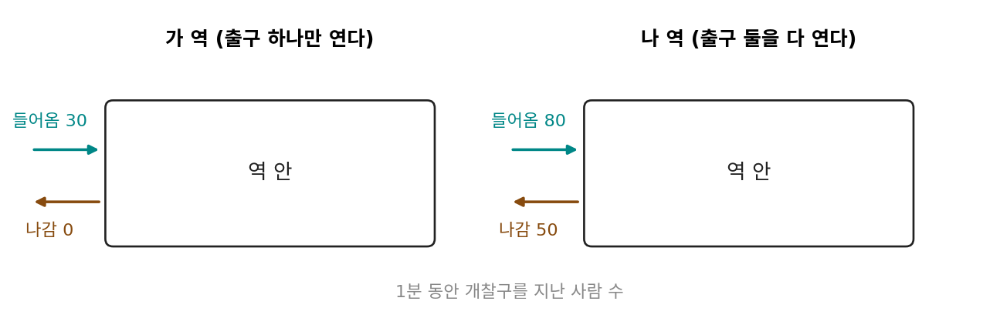
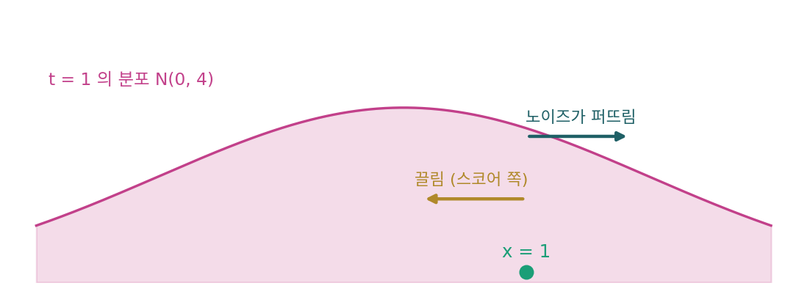

주변 분포: 길은 달라도 매 순간의 분포는 같다
역방향 SDE도, 확률 플로우 ODE도, 랑주뱅 쌍을 셋 얹은 규칙도 같은 분포에 닿았다. 그런데 점 하나가 걷는 길을 그려 보면 셋은 전혀 다르다. ODE의 길은 매끈하고, SDE의 길은 비틀거리고, 쌍을 셋 얹은 길은 그보다 더 어지럽게 오르내린다. 길이 이렇게 다른데 같은 것은 정확히 무엇일까? 그리고 걷는 규칙을 바꿔도 결과가 그대로이려면, 무엇을 지켜야 할까?
역사: 전화 교환기에서 다듬은 앞으로 방정식
1949년에 나온 첫 버클리 수리통계·확률 심포지엄 논문집에 코넬 대학의 수학자 윌리엄 펠러(William Feller, 1906–1970)가 30쪽짜리 논문 「확률 과정의 이론, 특히 응용과 관련하여」를 실었다. 자그레브에서 태어나 독일 킬 대학에서 가르치던 펠러는 나치 서약에 서명하지 않고 1933년 독일을 떠났고, 1939년 미국으로 건너왔다. 그가 논문 머리에 적은 고민은 이론과 응용이 서로를 알아보지 못한다는 것이었다. 콜모고로프(Andrey Kolmogorov)의 1931년 논문 이후 확률 과정 이론은 실제 현상을 설명할 수 있음을 보였지만, 수학 문헌은 이 이론을 형식적이고 일반적으로만 다루었다. 실제 문제는 저마다 특수한 방법으로, 펠러의 말로는 「여러 변장을 하고」 풀려서 일반 이론과 이어진다는 것이 드러나지 않았다.
그래서 펠러는 가장 단순한 예부터 늘어놓았다. 전화가 걸려 오는 순간, 방사성 원자의 붕괴, 우주선 입자의 충돌은 모두 상태가 한동안 그대로 있다가 갑자기 한 칸 뛰는 과정이고, 이런 과정은 이미 자동 전화 교환기와 보험 회사의 위험 계산에 쓰이고 있었다. 이런 과정마다 콜모고로프를 따라 미분방정식을 두 벌 세울 수 있다. 출발 시각과 출발 상태를 고정하고 도착 쪽을 변수로 두면 앞으로 방정식(forward equation), 도착을 고정하고 출발 쪽을 변수로 두면 뒤로 방정식(backward equation)이다. 펠러는 앞으로 방정식이 물리적으로 더 자연스럽지만, 뒤로 방정식은 「가역성의 물음과 관련해 중요한 역할을 한다」고 적었다.

논문의 마지막 절은 확산으로 넘어간다. 생물 집단의 크기는 개체가 태어나거나 죽을 때마다 하나씩 뛰지만, 집단이 크면 크기를 연속인 값으로 다뤄도 되고 그때는 확산 방정식이 계산에 더 편하다. 확산에서는 아주 짧은 시간 동안 입자가 평균 얼마나 움직이는지와 그 움직임의 분산, 두 가지만 정해 두면 앞으로 방정식과 뒤로 방정식이 나온다. 가장 단순한 확산에서 그 해는 정규분포다.
66년 뒤 이 논문을 다시 꺼낸 것은 생성 모델이었다. 2015년 졸-딕스타인(Jascha Sohl-Dickstein)과 동료들은 데이터를 노이즈로 천천히 무너뜨리고 거꾸로 되살리는 생성 모델을 내놓으면서, 「거꾸로 밟는 한 스텝을 어떤 꼴로 적을 것인가」의 근거로 펠러의 1949년 논문을 들었다. 스텝 크기가 작은 연속 확산의 극한에서는 거꾸로 가는 과정도 정방향의 분포 꼴을 그대로 따른다는 것이다. 정방향 한 스텝이 정규분포이니 스텝을 작게 잡으면 거꾸로 한 스텝도 정규분포이고, 모델은 그 평균과 분산만 배우면 된다.


짧은 시간의 평균 이동과 분산, 두 가지만 정하면 앞으로 방정식이 나온다고요? 그럼 그 두 가지가 같아야 분포도 똑같이 가겠네요.

이 장에서 쓴 규칙들로 확인해 볼까요? 역방향 SDE와 확률 플로우 ODE는 평균 이동이 같았어요?

아니요. 스코어 항이 하나는 2DsΔt, 하나는 DsΔt였어요. 분산도 2DΔt와 0으로 달랐고요. 둘 다 다른데 분포는 같았어요.

그럼 두 가지가 각각 같을 필요는 없고, 둘이 함께 만드는 무언가만 같으면 되는 거 아닐까요? 평균 이동이 큰 만큼 분산도 커서, 하나가 더 모으는 만큼 다른 하나가 더 퍼뜨리면요.

그 「함께 만드는 무언가」가 무엇인지가 이 절의 물음이에요.
길 전체의 분포와 한 시각의 분포
같은 출발점 2만 개를 t = 1에서 0까지 2,000스텝에 걸어 보자. 데이터는 앞 절들과 같이 −2(비중 0.2)와 +2(비중 0.8), 폭 0.5이고 D = 4다. 규칙은 랑주뱅 쌍을 λ개 얹은 스텝 x + (1 + λ)DsΔt + √(2λDΔt) ε이고, λ = 0이 확률 플로우 ODE, λ = 1이 역방향 SDE다.
| t = 0.5 오른쪽 비율 | t = 0.5 표준편차 | t = 0 오른쪽 비율 | t = 0 표준편차 | 출발과 도착의 상관 | 오른쪽에서 출발한 점이 오른쪽에 도착한 비율 | |
|---|---|---|---|---|---|---|
| 참값 | 0.700 | 2.610 | 0.800 | 1.676 | ||
| λ = 0 (ODE) | 0.699 | 2.607 | 0.797 | 1.680 | 0.888 | 1.000 |
| λ = 1 (SDE) | 0.700 | 2.600 | 0.800 | 1.674 | 0.506 | 0.925 |
| λ = 3 | 0.702 | 2.615 | 0.796 | 1.686 | 0.187 | 0.844 |
한 시각만 떼어 보면 세 규칙의 점들은 t = 0.5에서도 0에서도 참값과 같은 비율, 같은 퍼짐으로 놓여 있다. 그런데 두 시각을 함께 보면 다르다. ODE에서는 오른쪽에서 출발한 점이 모두 오른쪽에 닿지만, 쌍을 셋 얹으면 그런 점이 84.4%뿐이다. 출발과 도착의 상관도 0.888에서 0.187로 떨어진다.
점 하나의 길은 시각마다의 자리를 늘어놓은 것 (x(1), x(0.5), x(0))이다. 이 묶음 전체의 분포를 길의 결합 분포라 하면, 한 시각 t의 분포 pt는 나머지 시각을 모두 더해 지운 주변 분포다. 사진첩 표에서 동물을 더해 지우면 찍은 곳의 주변 분포가 남던 것과 같은 연산이다. 줄 합과 칸 합이 같아도 네 칸은 여러 가지일 수 있었듯이, 시각마다의 주변 분포가 같아도 길의 결합 분포는 여러 가지일 수 있다. 세 규칙은 주변 분포를 모두 같게 두고 결합 분포만 다르게 고른 것이다.
그림을 뽑는 데 필요한 것은 t = 0의 주변 분포 하나인데, 마지막 자리 x(0)만 쓰고 지나온 길은 버리기 때문이다. 다만 걷는 도중에도 점들이 매 순간 pt대로 놓여 있어야 한다. 스코어 s(x, t)는 pt의 스코어이고, 점들이 다른 분포로 새어 나가면 스코어를 그 스코어가 맞지 않는 자리에서 읽게 된다. 그래서 지켜야 할 것은 「매 순간의 주변 분포」다.
경계를 지나는 알짜 흐름
매 순간의 주변 분포가 같으려면 무엇이 같아야 할까? 위 실험에서 점들이 0을 지나간 횟수를 세어 보면 실마리가 보인다. ODE의 점들은 0을 왼쪽에서 오른쪽으로 2,868번 지났고 반대로는 한 번도 지나지 않았다. SDE의 점들은 왼쪽에서 오른쪽으로 107,849번, 반대로 104,924번 지났고, 쌍을 셋 얹으면 183,635번과 180,790번으로 늘어난다. 지나간 횟수는 수십 배씩 다른데, 오른쪽으로 간 횟수에서 왼쪽으로 간 횟수를 뺀 알짜는 2,868, 2,925, 2,845로 거의 같다. 오른쪽 비율이 0.654에서 0.800으로 늘어나려면 2만 개 가운데 2,917개가 알짜로 넘어가야 하니, 셋 다 그 수를 맞춘 셈이다.

어느 자리의 점 수는 그 자리 경계를 드나드는 알짜 흐름으로만 바뀐다. 들어온 만큼 나가면 오가는 점이 아무리 많아도 그 자리의 점 수는 그대로다. 그래서 두 규칙이 경계마다 같은 알짜 흐름을 만들면 매 순간의 분포가 같고, 흐름을 어떤 꼴로 만드는지는 상관이 없다. 펠러가 말한 두 가지, 짧은 시간의 평균 이동(끌림)과 분산(노이즈) 가운데 분포의 앞날을 정하는 것은 둘이 함께 만드는 알짜 흐름이다.
알짜 흐름을 속도로 적어 보자. 노이즈로 퍼지는 분포는 확률이 속도 −Ds로 흐르는 것과 같았다(D는 노이즈의 확산 계수, s는 지금 분포의 스코어). 랑주뱅 쌍 λ개의 노이즈는 확산 계수가 λD이니 확률을 −λDs로 흘려 퍼뜨리고, 끌림은 점을 (1 + λ)Ds로 옮긴다. 둘을 더한 알짜 속도는 다음과 같다.
λ가 사라진다. 끌림을 λDs만큼 세게 하는 만큼 노이즈가 같은 크기로 되퍼뜨리니, 알짜는 확률 플로우 ODE의 속도 Ds 그대로다. 앞에서 이서연이 짐작한 「둘이 함께 만드는 무언가」가 이 알짜 속도이고, 분포가 시간에 따라 어떻게 바뀌는지를 적은 앞으로 방정식(물리에서는 포커–플랑크 방정식)이 보는 것도 이 알짜 흐름뿐이다. 반대로 끌림과 노이즈 가운데 하나만 바꾸면 알짜가 바뀌어 분포가 새어 나간다. 문제 7에서 쌍을 깬 두 규칙이 퍼지거나 몰린 것도 알짜가 바뀌었기 때문이다.
위젯 2의 「스코어 항의 배수 c」와 「노이즈 항의 배수 g」에서 c = 1 + λ, g = λ이다. c = 1 + g를 지키며 함께 올리면 길만 어지러워지고 히스토그램은 그대로이고, 둘 가운데 하나만 움직이면 히스토그램이 분홍 곡선을 벗어난다.
ML에서: 학습 데이터에는 길이 없다
디노이징 스코어 매칭으로 배울 때, 학습 그림 하나에 노이즈 레벨 하나를 뽑아 노이즈를 섞고 그 노이즈를 맞히게 한다. 한 학습 예제에 시각은 하나뿐이라, 같은 그림이 t = 0.5에서 어디에 있었고 t = 0.4에서 어디로 갔는지는 데이터에 없다. 모델이 배우는 것은 시각마다의 주변 분포 pt의 스코어뿐이고, 길의 결합 분포는 배우지 않는다. 그래서 같은 모델을 다시 학습하지 않고도 생성할 때 λ를 마음대로 고를 수 있다. 모델이 정해 주지 않은 것을 샘플러가 고르는 셈이다.
문제 12. 개찰구 두 개
지하철역 두 곳의 개찰구를 1분 동안 세었더니, 가 역은 출구 하나만 열어 30명이 들어오고 아무도 나가지 않았고 나 역은 출구를 둘 다 열어 80명이 들어오고 50명이 나갔다. (가) 1분 동안 역 안의 사람 수는 두 역에서 각각 얼마나 늘었는가? (나) 개찰구를 지난 사람 수만 보고 어느 역이 더 빨리 차는지 말할 수 있는가? (다) 위 실험에서 0을 지난 횟수의 표와 견주면, 가 역과 나 역은 각각 어느 규칙에 해당하는가?


(가)는 가 역이 30명, 나 역이 80 − 50 = 30명. 둘 다 30명씩 늘었어.
(나)는 지나간 사람으로 보면 가 역은 30명, 나 역은 130명이야. 그런데 늘어난 건 같으니까, 지나간 사람 수로는 못 정하겠다.
(다)는요?

가 역이 확률 플로우 ODE예요. 한 방향으로만 2,868번 지났으니까요. 나 역은 양쪽으로 십만 번씩 지난 역방향 SDE고요. 알짜는 둘 다 3천 언저리라 역 안의 점 수는 같이 늘어요.

출퇴근 시간에 붐비는 역이라고 사람이 빨리 차는 건 아니네. 드나드는 사람이 많아도 들어온 만큼 나가면 역은 그대로고.
문제 13. 끌림과 퍼뜨리기의 짝
데이터가 N(0, 1)이고 D = 1.5로 노이즈를 섞어, 시간 t의 분포가 pt = N(0, 1 + 3t)이다. (가) t = 1, x = 1에서 λ = 0, 1, 2일 때 끌림의 속도, 노이즈가 퍼뜨리는 속도, 알짜 속도를 구하라. (나) 끌림은 λ = 1의 것(2Ds)을, 노이즈는 λ = 2의 것(√(4DΔt))을 쓰면 t = 0에서 점들의 표준편차는 1보다 큰가 작은가? 거꾸로 짝지으면?

(가)부터 할게. N(0, 4)의 스코어는 −x/4라서 x = 1이면 −0.25야. Ds = 1.5 × (−0.25) = −0.375. λ = 0이면 끌림 −0.375, 퍼뜨림 0, 알짜 −0.375.
λ = 1이면 끌림이 두 배라 −0.750, 퍼뜨림은 −λDs = +0.375. 알짜 −0.375. λ = 2면 −1.125와 +0.750이라 역시 −0.375네.

(나)는… 끌림이 −0.750인데 퍼뜨림이 +0.750이면 알짜가 0이니까, 이 점은 제자리에 머물겠네. 그럼 분포가 안 줄어서 표준편차가 2로 남을 것 같아.
알짜가 0인 건 t = 1, 그 순간이에요. 한 스텝 뒤에도 점들이 pt대로 놓여 있을까요?

아니요, 첫 스텝에서 덜 줄었으니 점들은 이미 pt보다 넓어요. 퍼뜨리는 속도는 지금 점들이 놓인 분포의 스코어로 정해지는데, 넓은 분포는 스코어가 작아서 퍼뜨림이 −0.750보다 약해지고… 그러니까 알짜가 0에 머물지는 않고, 계속 조금씩 덜 줄어드는 거예요.

돌려 볼게. 끌림 λ = 1에 노이즈 λ = 2면 표준편차 1.321, 거꾸로 끌림 λ = 2에 노이즈 λ = 1이면 0.728이야. 짝이 맞는 λ = 0과 2는 둘 다 0.999고.

노이즈가 짝보다 크면 덜 줄어 넓게, 작으면 더 줄어 좁게 끝나요. 끌림과 노이즈는 짝으로만 움직일 수 있어요.